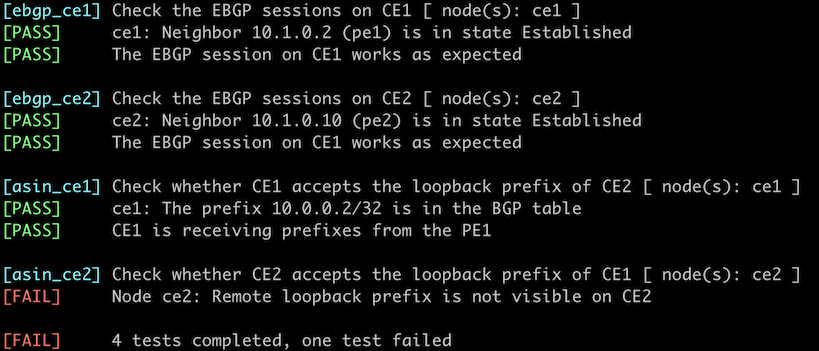

Reuse a BGP AS Number Across Multiple Sites
In the Redistribute IGP Information Into BGP exercise, you practiced using BGP with a service provider offering MPLS/VPN services. At that time, the service provider gave you two autonomous systems (one per site), which might not be feasible for large service providers1. In this lab, you’ll practice a more realistic scenario in which you get the same BGP AS number for all sites.

Existing BGP Configuration
The routers in your lab use the following BGP AS numbers. The ISP routers do not advertise local prefixes; your routers advertise their loopbacks.
| Node/ASN | Router ID | Advertised prefixes |
|---|---|---|
| AS65000 | ||
| ce1 | 10.0.0.1 | 10.0.0.1/32 |
| ce2 | 10.0.0.2 | 10.0.0.2/32 |
| AS65100 | ||
| pe1 | 10.0.0.10 | |
| pe2 | 10.0.0.11 |
Your routers have these EBGP neighbors. netlab configures them automatically; if you’re using some other lab infrastructure, you’ll have to configure EBGP neighbors and advertised prefixes manually.
| Node | Router ID / Neighbor |
Router AS/ Neighbor AS |
Neighbor IPv4 |
|---|---|---|---|
| ce1 | 10.0.0.1 | 65000 | |
| pe1 | 65100 | 10.1.0.2 | |
| ce2 | 10.0.0.2 | 65000 | |
| pe2 | 65100 | 10.1.0.10 |
PE1 and PE2 run OSPF and exchange BGP routes over an IBGP session.
Start the Lab
Assuming you already set up your lab infrastructure:
- Change directory to
session/1-allowas_in - Execute netlab up (device requirements, other options)
- Log into your devices (CE1, CE2) with netlab connect and verify that they have established EBGP sessions with the PE routers.
Note: netlab will configure IP addressing, BGP sessions, and BGP prefix advertisements on all routers. It will also configure OSPF between PE1 and PE2. You must manually configure your routers if you’re not using netlab.
The Problem
Assuming your routers are configured correctly, you should see the local loopback address in the BGP table. For example, this is how the BGP table looks on CE1 running Arista EOS:
ce1>show ip bgp | begin Network
Network Next Hop Metric AIGP LocPref Weight Path
* > 10.0.0.1/32 - - - - 0 i
The loopback prefixes are propagated to the PE-routers and are visible in their BGP tables:
$ netlab connect pe1 --show ip bgp
Connecting to container clab-allowas-pe1, executing sudo vtysh -c "show ip bgp"
BGP table version is 2, local router ID is 10.0.0.10, vrf id 0
Default local pref 100, local AS 65100
Status codes: s suppressed, d damped, h history, * valid, > best, = multipath,
i internal, r RIB-failure, S Stale, R Removed
Nexthop codes: @NNN nexthop's vrf id, < announce-nh-self
Origin codes: i - IGP, e - EGP, ? - incomplete
Network Next Hop Metric LocPrf Weight Path
*> 10.0.0.1/32 10.1.0.1 0 65000 i
*>i10.0.0.2/32 10.0.0.11 100 0 65000 i
However, the loopback prefix of CE2 is not visible on CE1 and vice versa. It’s time for a troubleshooting session.
Why Are the Loopback Prefixes Not Propagated?
It’s relatively easy to find out what’s wrong on platforms supporting debugging of BGP updates. This is a printout you’d get on CE1 running Cisco IOS after enabling BGP update debugging2 and clearing the EBGP session:
ce1#debug ip bgp updates
BGP updates debugging is on for address family: IPv4 Unicast
ce1#clear ip bgp *
ce1#
%BGP-3-NOTIFICATION_MANY: sent to 1 sessions 6/4 (Administrative Reset) for all peers
%BGP-5-ADJCHANGE: neighbor 10.1.0.2 Down User reset
%BGP_SESSION-5-ADJCHANGE: neighbor 10.1.0.2 IPv4 Unicast topology base removed from session User reset
%BGP-5-ADJCHANGE: neighbor 10.1.0.2 Up
BGP(0): 10.1.0.2 rcv UPDATE w/ attr: nexthop 10.1.0.2, origin i, originator 0.0.0.0, merged path 65100 65000, AS_PATH , community , extended community , SSA attribute
*Dec 11 08:18:35.013: BGP(0): 10.1.0.2 rcv UPDATE about 10.0.0.2/32 -- DENIED due to: AS-PATH contains our own AS;
The debugging printouts are unambiguous: the incoming update contains the local AS number in the AS path. BGP loop prevention logic kicks in, and the update is dropped.
You’d have a tough time figuring out what’s wrong if your device does not support BGP update debugging. For example, the only hint you’d get on Arista EOS3 is hidden deep within the show ip bgp neighbor printout:
ce1>show ip bgp neighbor
BGP neighbor is 10.1.0.2, remote AS 65100, external link
Description: pe1
BGP version 4, remote router ID 10.0.0.10, VRF default
Last read 00:00:01, last write 00:00:01
Hold time is 9, keepalive interval is 3 seconds
... skipped tons of irrelevant information ...
Prefix Statistics:
Sent Rcvd Best Paths Best ECMP Paths
IPv4 Unicast: 1 0 0 0
IPv6 Unicast: 0 0 0 0
Configured maximum total number of routes is 256000, warning limit is 204800
Inbound updates dropped by reason:
AS path loop detection: 2
Now that we’ve identified the problem, let’s deploy a kludge to fix it.
Configuration Task
Most BGP implementations have a nerd knob that disables the BGP AS-path-based loop prevention logic. It’s usually configured on individual BGP sessions (per neighbor) with a command similar to neighbor allowas-in.
- Disable the BGP loop prevention logic on CE1 and CE2
- Refresh the BGP tables on CE1 and CE2. You can either clear the EBGP sessions with the PE routers or perform a route refresh with a command similar to clear ip bgp soft in
Verification
You can use the netlab validate command if you’ve installed netlab release 1.7.0 or later and use Cumulus Linux, FRR, or Arista EOS on your devices. You’ll get this printout if you configure allowas-in on CE1 but not CE2.

If that command fails or you’re using another network operating system on your devices, check the BGP tables on CE1 and CE2 and verify that they contain both loopback prefixes. This is the printout you could get on Arista EOS:
ce1#show ip bgp
BGP routing table information for VRF default
Router identifier 10.0.0.1, local AS number 65000
Route status codes: s - suppressed contributor, * - valid, > - active, E - ECMP head, e - ECMP
S - Stale, c - Contributing to ECMP, b - backup, L - labeled-unicast
% - Pending BGP convergence
Origin codes: i - IGP, e - EGP, ? - incomplete
RPKI Origin Validation codes: V - valid, I - invalid, U - unknown
AS Path Attributes: Or-ID - Originator ID, C-LST - Cluster List, LL Nexthop - Link Local Nexthop
Network Next Hop Metric AIGP LocPref Weight Path
* > 10.0.0.1/32 - - - - 0 i
* 10.0.0.1/32 10.1.0.2 0 - 100 0 65100 65000 i
* > 10.0.0.2/32 10.1.0.2 0 - 100 0 65100 65000 i
Note
The PE routers might send the prefix advertised by a CE router back to that same CE router (the behavior is probably implementation-dependent), in which case you will see two paths to the local loopback prefix.
Next: Fix AS-Path in Environments Reusing BGP AS Numbers.
Reference Information
This lab uses the 4-router lab topology. The following information might help you if you plan to build custom lab infrastructure:
Device Requirements
- Customer routers: use any device supported by the netlab BGP configuration module.
- Provider routers: use any device supported by the netlab BGP and OSPF configuration modules.
- You can do automated lab validation with Arista EOS, Cumulus Linux, or FRR running on the customer routers. Automated lab validation requires netlab release 1.7.0 or higher.
- Git repository contains initial provider routers’ device configurations for Cumulus Linux.
Lab Wiring
| Link Name | Origin Device | Origin Port | Destination Device | Destination Port |
|---|---|---|---|---|
| Site_A-to-ISP | ce1 | Ethernet1 | pe1 | swp1 |
| Unused link | ce1 | Ethernet2 | pe2 | swp1 |
| Intra-ISP link | pe1 | swp2 | pe2 | swp2 |
| Unused link | ce2 | Ethernet1 | pe1 | swp3 |
| Site_B-to-ISP | ce2 | Ethernet2 | pe2 | swp3 |
Lab Addressing
| Node/Interface | IPv4 Address | IPv6 Address | Description |
|---|---|---|---|
| ce1 | 10.0.0.1/32 | Loopback | |
| Ethernet1 | 10.1.0.1/30 | Site_A-to-ISP | |
| Ethernet2 | Unused link | ||
| ce2 | 10.0.0.2/32 | Loopback | |
| Ethernet1 | Unused link | ||
| Ethernet2 | 10.1.0.9/30 | Site_B-to-ISP | |
| pe1 | 10.0.0.10/32 | Loopback | |
| swp1 | 10.1.0.2/30 | Site_A-to-ISP | |
| swp2 | 10.1.0.5/30 | Intra-ISP link | |
| swp3 | Unused link | ||
| pe2 | 10.0.0.11/32 | Loopback | |
| swp1 | Unused link | ||
| swp2 | 10.1.0.6/30 | Intra-ISP link | |
| swp3 | 10.1.0.10/30 | Site_B-to-ISP |
-
There are only 1024 unique private AS numbers unless you use 4-byte BGP AS numbers. ↩
-
Do not use the debug ip bgp updates command on a production router. That’s how I disconnected a small country from the global Internet in the 1990s. The only somewhat safe way to use this powerful tool is with an access control list (ACL) that selects only the few prefixes you’re interested in. ↩
-
According to their Basic BGP Troubleshooting documentation ↩